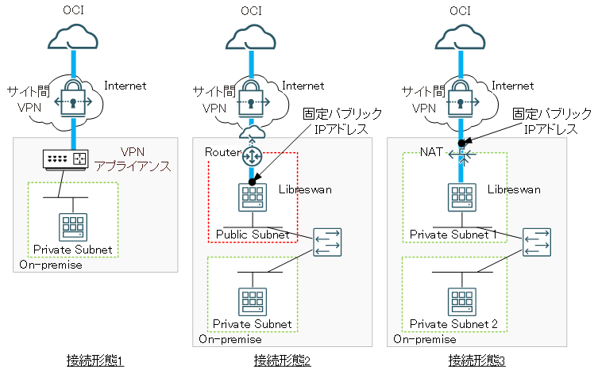
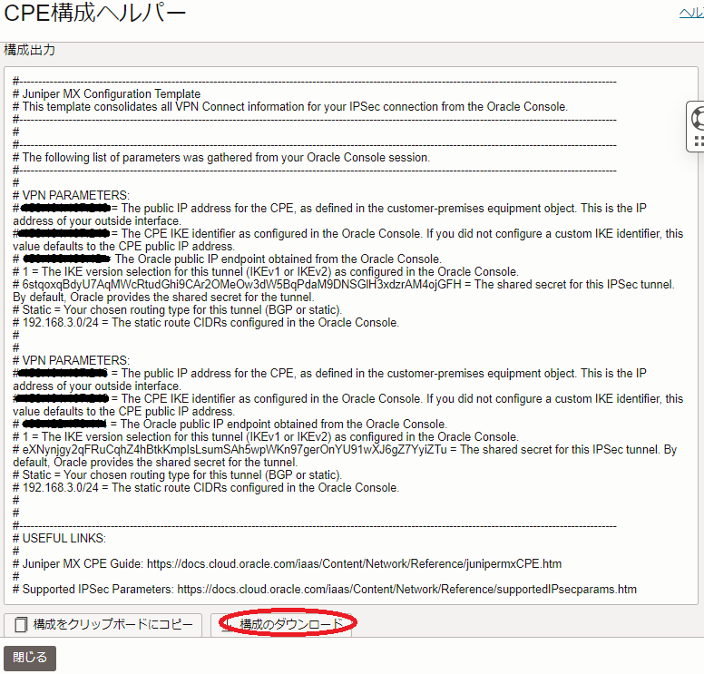

サイト間VPNによるOCIとの拠点間接続方法
注意 : 本コンテンツ内の画面ショットは、現在のOCIコンソール画面と異なっている場合があります。
サイト間VPN は、IPSecのトンネルモードを使用するOCIのマネージドVPN接続サービスで、オンプレミスのネットワークとOCIの 仮想クラウド・ネットワーク をIP層で拠点間接続するため、以下のような利用形態をセキュアでシームレスに実現することが可能です。
- OCIで稼働する計算ノードでオンプレミスのライセンスサーバから有償CAEアプリケーションのライセンスを取得する
- オンプレミスの端末からOCIで稼働するログインノードにログインしインタラクティブ処理を行う
- オンプレミスの端末からOCIで稼働するログインノードにシミュレーションに必要なファイルを転送する
- OCIで稼働するログインノードからシミュレーションの結果ファイルをオンプレミスの端末に転送する
また サイト間VPN は、サービス自体は無償のサービスでパブリックインターネットを拠点間接続回線に利用するため、OCIからオンプレミスに向けた転送データ量が少ない利用形態 1. から 3. のケースでは、他の有料専用線サービスと比較し、価格を抑えた拠点間接続が可能です。
また サイト間VPN を介する拠点間の通信帯域は、使用するインターネット接続回線に十分な余力がある場合、サービス自体の性能上限として250Mbps程度を期待することが出来ます。（詳細は、 ここ を参照してください。）このため、高い通信帯域を必要としない前述の利用形態 1. や 2. のケースに於いては、パフォーマンス的にも十分な拠点間接続方法であると言えます。
また サイト間VPN を使用する拠点間接続の冗長性は、以下の観点で考慮する必要がありますが、本テクニカルTipsの手順で作成する拠点間接続は、観点 1. のみ実施（以降の 2-6. IPSec接続作成 で作成する2個のトンネルがそれぞれVPNヘッドエンドを持ちます。）されています。観点 2. と 3. の冗長化が必要な場合は、 ここ の情報が参考になります。
- OCI側VPNヘッドエンドの冗長化
- オンプレミス側VPN接続機器の冗長化
- オンプレミス側インターネット接続回線の冗長化
ここで サイト間VPN によるオンプレミスとOCIの拠点間接続は、いくつかの接続形態が用意されており、オンプレミス側の現状や各接続形態の特徴を考慮し、接続作業の第一ステップとしてどの接続形態を採用するかを決定する必要があります。
また本テクニカルTipsは、拠点間が想定通り接続されていることを確認するため、オンプレミス側のプライベートネットワークに接続するライセンスサーバ相当のインスタンスとOCI側のプライベートサブネットに接続する計算ノード相当のインスタンス間でpingとSSHによる疎通確認を行います。
以上より、次章以降では以下の順に解説を進めます。
本章は、以下の観点からオンプレミスとOCIの拠点間接続形態を決定します。
- オンプレミス側のVPN接続機器に何を使用するか
（VPNアプライアンス製品かIPSecのソフトウェア実装（Libreswan）か） - オンプレミス側のVPN接続機器をどのネットワークに接続するか
（パブリックネットワーク接続かプライベートネットワーク接続か） - オンプレミスとOCIのルーティング情報をどのように交換するか
（静的ルーティングかBGP動的ルーティングか）
ここで、観点 1. と観点 2. の組み合わせを考慮すると、以下3種類の接続形態が存在します。

また、この3種類の接続形態に観点 3. の選択肢が加わり、最終的には以下6種類の接続形態が存在します。
- 接続形態1-静的ルーティング
- 接続形態1-BGP動的ルーティング
- 接続形態2-静的ルーティング
- 接続形態2-BGP動的ルーティング
- 接続形態3-静的ルーティング
- 接続形態3-BGP動的ルーティング
以降では、 1. から 3. の観点を順に考察し、これら6種類から最適な接続形態を選択する方法を解説します。
接続形態が確定したら、 2. 拠点間接続の作成 に進み、各接続形態毎に用意されている手順にしたがい拠点間を接続します。
本章は、オンプレミス側のVPN接続機器を決定します。
サイト間VPN と接続するオンプレミス側のVPN接続機器は、以下の選択肢があります。
- VPNアプライアンス製品（※1）を使用する
- サーバ上で動作するIPSec実装（※2）/BGP実装を使用する（※3）
※1） サイト間VPN サービスで検証された ここ に記載のVPNアプライアンス製品から選択します。
※2） サイト間VPN サービスで検証された Libreswan か strongSwan から選択します。
※3）本テクニカルTipsは、それぞれで以下のオープンソースのソフトウェア実装を使用します。
| ルーティング | IPSec実装 | BGP実装 |
|---|---|---|
| 静的 | Libreswan | - |
| BGP動的 | Libreswan | FRR（FRRouting） |
このため、 サイト間VPN サービスで検証されたVPNアプライアンス製品が既にオンプレミスで稼働している場合は選択肢 1. を採用し、それ以外であれば選択肢 2. を採用します。
ここで、選択肢 1. を採用すると接続形態1となり、 1-3. オンプレミス・OCI間ルーティン情報交換方式の決定 に進みます。
また選択肢 2. を採用する場合は、 1-2. オンプレミス側VPN接続機器のネットワーク接続形態の決定 に進み、接続形態2と接続形態3のどちらを採用するかを判断します。
本章は、オンプレミス側VPN接続機器にサーバ上で動作するIPSec/BGP実装を採用した場合、このサーバをどのようにオンプレミスのネットワークに接続するかを決定します。
オンプレミス側VPN接続機器は、パブリックサブネットに接続する接続形態2とプライベートサブネットに接続する接続形態3から選択することが可能で、以下の各接続形態の必要条件を自身のオンプレミス環境に照らし合わせて、どちらを採用するか判断します。
| 接続形態 | 必要条件 |
|---|---|
| 2 | ・VPN接続機器をパブリックサブネットに接続 ・このパブリックサブネットを拠点間通信対象のプライベートサブネットとルーティング ・VPN接続機器に固定パブリックIPアドレスを付与 |
| 3 | ・VPN接続機器をNAT経由IPSecで外部アクセス可能なプライベートサブネットに接続 ・このプライベートサブネットを拠点間通信対象のプライベートサブネットとルーティング ・NATのインターネット側パブリックIPアドレスが自明 ・NATのインターネット側パブリックIPアドレスが固定 |
接続形態2と接続形態3のどちらを採用するかを決定したら、 1-3. オンプレミス・OCI間ルーティン情報交換方式の決定 に進みます。
本章は、オンプレミスとOCIのルーティング情報交換方式を決定します。
この交換方式は、静的ルーティングとBGP動的ルーティングが選択でき、以下の利点・欠点があります。
| 利点 | 欠点 | |
|---|---|---|
| 静的 | ・BGP動的と比較して初期構築手順が簡素 | ・オンプレミス側ルーティング情報変更時OCI側の設定変更が必要 |
| BGP 動的 |
・オンプレミス側ルーティング情報変更時OCI側の対応不要 | ・静的と比較して初期構築手順が煩雑 |
これより、拠点間で通信する必要のあるサブネットが運用中に追加・変更される頻度により、どちらを採用するかを決定します。
本章は、 1. 接続形態の決定 で確定した接続形態毎に用意された手順にしたがい、拠点間接続を作成します。
本テクニカルTipsは、検証に使用できるリソースの制約から、VPN接続機器に選択肢 2. のサーバ上で動作するIPSec/BGP実装を使用し、これをオンプレミスのネットワークに模したOCIの 仮想クラウド・ネットワーク （以降"左側サイト"と呼称）に作成、左側サイトとは異なるリージョンに作成する 仮想クラウド・ネットワーク （以降"右側サイト"と呼称）を サイト間VPN で拠点間接続する手順を解説します。
このため、本テクニカルTipsの左側サイトに関連する手順をオンプレミスのネットワークに置き換え、またVPN接続機器の選択肢 2. に関連する手順を選択肢 1. のVPNアプライアンス製品のものに置き換えることで、自身の環境に合わせた拠点間接続構築手順とします。
以下は、本テクニカルTipsで想定する各接続形態ごとのシステム構成図です。
記載されるネットワークアドレス等は、自身の環境のものに読みかえてご利用ください。
次章以降では、以下の順に解説を進めます。
括弧内の記述は、対象の手順をどちらのサイトで実施するかを示しています。
- 左側サイト用ネットワーク関連リソース作成（左側サイト）
- 右側サイト用 仮想クラウド・ネットワーク と関連リソース作成（右側サイト）
- 疎通確認用インスタンス作成（左側サイト・右側サイト）
- Libreswan用インスタンス作成・セットアップ（左側サイト）
- 拠点間接続関連OCIリソース作成（右側サイト）
- IPSec接続作成（右側サイト）
- VPN接続機器セットアップ（左側サイト）
なお接続形態1を採用する場合は、手順 4. をスキップします。
本章は、以下の左側サイト用ネットワーク関連リソースを作成します。
ここで本テクニカルTipsの左側サイトのネットワーク関連リソースは、右側サイトと同一テナンシーの異なるリージョンに作成する 仮想クラウド・ネットワーク と関連するリソースでこれを模しており、適宜オンプレミスのネットワークでの手順に置き換えて作成してください。
- 仮想クラウド・ネットワーク （192.168.0.0/16）
- パブリックサブネット（192.168.1.0/24）（接続形態2）
- プライベートサブネット1-3（192.168.2-4.0/24）
- インターネット・ゲートウェイ （接続形態2） / NATゲートウェイ （接続形態3）
- パブリックサブネット用 ルート表 （接続形態1・2）
- プライベートサブネット用 ルート表
- パブリックサブネット用 セキュリティ・リスト （接続形態1・2）
- プライベートサブネット用 セキュリティ・リスト
ルート表 に含める ルート・ルール と セキュリティ・リスト は、下表のとおりです。
[接続形態1・2]
| 対象サブネット | Destination | Gateway | Purpose |
|---|---|---|---|
| パブリック | 0.0.0.0/0 | インターネット・ゲートウェイ | 右側サイトとのトラフィック |
| プライベート2・3 | 10.0.0.0/16 | 192.168.1.42 （※4） | 右側サイトとのトラフィック |
| 対象サブネット | Direction | Source/ Destination |
Protocol | Stateless | Purpose |
|---|---|---|---|---|---|
| パブリック | Ingress | 192.168.0.0/16 | All | No | 左側サイトからのアクセス |
| Egress | 0.0.0.0/0 | All | No （※5） |
左側サイトへのアクセス 右側サイトへのアクセス |
|
| プライベート2・3 | Ingress | 192.168.0.0/16 | All | No | 左側サイトからのアクセス |
| Ingress | 10.0.0.0/16 | All | No | 右側サイトからのアクセス | |
| Egress | 0.0.0.0/0 | All | No | 左側サイトへのアクセス 右側サイトへのサクセス |
※4）VPN接続機器のプライベートIPアドレスです。接続形態2の場合は、 2-4. Libreswan用インスタンス作成・セットアップ でインスタンスを作成してIPアドレスを確定した後ステップ 1. を実施し、この ルート・ルール を作成します。
※5）IPSec接続 作成時VPN接続機器が ステートフル・エグレス ルールで右側サイトからのアクセスを受け入れるために必要です。
[接続形態3]
| 対象サブネット | Destination | Gateway | Purpose |
|---|---|---|---|
| プライベート1 | 0.0.0.0/0 | NATゲートウェイ | 右側サイトとのトラフィック |
| プライベート2・3 | 10.0.0.0/16 | 192.168.2.42 （※6） | 右側サイトとのトラフィック |
| 対象サブネット | Direction | Source/ Destination |
Protocol | Stateless | Purpose |
|---|---|---|---|---|---|
| プライベート1 | Ingress | 192.168.0.0/16 | All | No | 左側サイトからのアクセス |
| Egress | 0.0.0.0/0 | All | No （※7） |
左側サイトへのアクセス 右側サイトへのアクセス |
|
| プライベート2・3 | Ingress | 192.168.0.0/16 | All | No | 左側サイトからのアクセス |
| Ingress | 10.0.0.0/16 | All | No | 右側サイトからのアクセス | |
| Egress | 0.0.0.0/0 | All | No | 左側サイトへのアクセス 右側サイトへのサクセス |
※6）Libreswan用インスタンスのプライベートIPアドレスです。 2-4. Libreswan用インスタンス作成・セットアップ でインスタンスを作成してIPアドレスを確定した後ステップ 1. を実施し、この ルート・ルール を作成します。
※7）IPSec接続 作成時 Libreswan が ステートフル・エグレス ルールで右側サイトからのアクセスを受け入れるために必要です。
本章は、以下の右側サイト用 仮想クラウド・ネットワーク と関連リソースを作成します。
本テクニカルTipsで使用しているCIDRレンジやIPアドレスは、自身の環境にあわせて読みかえてください。
- 仮想クラウド・ネットワーク （10.0.0.0/16（※8））
- パブリックサブネット（10.0.1.0/24）
- プライベートサブネット（10.0.2.0/24）
- インターネット・ゲートウェイ
- NATゲートウェイ
- パブリックサブネット用 ルート表
- プライベートサブネット用 ルート表
- パブリックサブネット用 セキュリティ・リスト
- プライベートサブネット用 セキュリティ・リスト
※8）左側サイトのサブネットと重複が無いCIDRレンジを選定します。
ルート表 に含める ルート・ルール と セキュリティ・リスト は、下表のとおりです。
| 対象サブネット | Destination | Gateway | Purpose |
|---|---|---|---|
| パブリック | 0.0.0.0/0 | インターネット・ゲートウェイ | インターネットとのトラフィック |
| プライベート | 0.0.0.0/0 | NATゲートウェイ | インターネットとのトラフィック |
| 192.168.0.0/16 | 動的ルーティング・ゲートウェイ （※9） |
左側サイトとのトラフィック |
| 対象サブネット | Direction | Source/ Destination |
Protocol | Stateless | Purpose |
|---|---|---|---|---|---|
| パブリック | Ingress | 10.0.0.0/16 | All | No | 右側サイトからのアクセス |
| Ingress | 0.0.0.0/0 | TCP:22 | No | インターネットからのSSHアクセス | |
| Egress | 0.0.0.0/0 | All | No | 右側サイトへのアクセス インターネットへのアクセス |
|
| プライベート | Ingress | 10.0.0.0/16 | All | No | 右側サイトからのアクセス |
| Ingress | 192.168.0.0/16 | All | No | 左側サイトからのアクセス | |
| Egress | 0.0.0.0/0 | All | No | 右側サイトへのアクセス 左側サイトへのサクセス |
※9）2-5-1. 動的ルーティング・ゲートウェイ作成 で 動的ルーティング・ゲートウェイ を作成後、この ルート・ルール を追加します。
これらのリソース作成方法は、 OCIチュートリアル の その2 - クラウドに仮想ネットワーク(VCN)を作る を参照してください。
本章は、拠点間接続の疎通確認に使用する下表のインスタンスを作成します。
| インスタンス | 用途 | 作成するサイト | 接続するサブネット | firewalld停止 |
|---|---|---|---|---|
| lic-srv | ライセンスサーバ相当 | 左側 | プライベート | 適用 |
| bastion | computeインスタンスへの踏み台 | 右側 | パブリック | 未適用 |
| compute | 計算ノード相当 | 右側 | プライベート | 適用 |
これらインスタンスの作成方法は、 OCIチュートリアル の その3 - インスタンスを作成する を参照してください。
本テクニカルTipsでは、これらのインスタンスにOSを Oracle Linux とする任意の 仮想マシン・インスタンス を使用します。
この際、後の疎通確認を行うため、表中に記載の該当するインスタンスでfirewalldサービスを停止します。
本章は、Libreswan用インスタンスを作成し、作成したインスタンスにVPN接続装置として機能させるために必要なセットアップ作業を行います。
なお接続形態1を採用する場合は、本章の手順をスキップします。
本テクニカルTipsでは、作成するインスタンスにOSを Oracle Linux 8.9とする任意の 仮想マシン・インスタンス を使用します。
インスタンス作成後、以下の手順を実施します。
- ソース/宛先チェックのスキップ（※10）
- パケット転送を許可するためのカーネルパラメータ設定追加
- 接続する右側サイトのサブネットアドレスからのアクセスをfirewalldに許可（※11）
※10）デフォルトで許可されていない VNIC のパケット転送設定を変更し、これを許可します。このソース/宛先チェックのスキップは、OCIでインスタンスを作成する際に実施する手順のため、オンプレミスで使用するサーバでの手順に置き換えて実施します。
※11）接続形態3でプライベートサブネット接続であることを理由に、firewalldを停止することでも代用可能です。
-
ソース/宛先チェックのスキップ
OCIコンソールにログインし、Libreswan用インスタンスの インスタンスの詳細 画面左側の アタッチされたVNIC メニューをクリックし、表示される以下 アタッチされたVNIC 画面の プライマリVNIC の VNICの編集 メニューをクリックします。表示される以下 VNICの編集 サイドバーで、 ソース/宛先チェックのスキップ チェックボックスをチェックし、 変更の保存 ボタンをクリックします。

-
パケット転送を許可するためのカーネルパラメータ設定追加
Libreswan用インスタンスで /etc/sysctl.conf に以下の行を追加します。
なお、設定ファイル中のネットワークインターフェース名（ens3）は、実際のインターフェース名に置き換えます。$ diff /etc/sysctl.conf_org /etc/sysctl.conf 13a14,24 > > net.ipv4.ip_forward = 1 > net.ipv4.conf.all.accept_redirects = 0 > net.ipv4.conf.all.send_redirects = 0 > net.ipv4.conf.default.send_redirects = 0 > net.ipv4.conf.ens3.send_redirects = 0 > net.ipv4.conf.default.accept_redirects = 0 > net.ipv4.conf.ens3.accept_redirects = 0 > net.ipv4.conf.all.rp_filter = 0 > net.ipv4.conf.default.rp_filter = 0 > net.ipv4.conf.ens3.rp_filter = 0 $Libreswan用インスタンスのopcユーザで以下コマンドを実行し、先の変更を有効化します。
$ sudo sysctl -p -
接続する右側サイトのサブネットアドレスからのアクセスをfirewalldに許可
Libreswan用インスタンスのopcユーザで以下コマンドを実行し、拠点間接続で接続する右側サイトのサブネットアドレス（ここではプライベートサブネットの 10.0.2.0/24）からのアクセスをfirewalldに許可し、その設定を確認します。$ sudo firewall-cmd --permanent --add-service="ipsec" success $ sudo firewall-cmd --permanent --zone=trusted --add-source=10.0.2.0/24 success $ sudo firewall-cmd --reload success $ sudo firewall-cmd --zone=trusted --list-all trusted (active) target: ACCEPT icmp-block-inversion: no interfaces: sources: 10.0.2.0/24 services: ports: protocols: forward: no masquerade: no forward-ports: source-ports: icmp-blocks: rich rules: $
本章は、以下の拠点間接続に関連するOCIリソースを右側サイトに作成します。
- 動的ルーティング・ゲートウェイ
- 仮想クラウド・ネットワーク・アタッチメント
- 顧客構内機器 （CPE）
本章は、 動的ルーティング・ゲートウェイ を作成します。
-
OCIコンソールにログインし、右側サイトをデプロイする リージョン を選択後、 ネットワーキング → 仮想クラウド・ネットワーク とメニューを辿り、表示される以下画面で 顧客接続性 メニューをクリックします。
-
表示される以下 顧客接続性 画面で、 動的ルーティング・ゲートウェイ メニューをクリックします。

-
表示される以下 動的ルーティング・ゲートウェイ 画面で、 動的ルーティング・ゲートウェイの作成 ボタンをクリックします。
-
表示される以下 動的ルーティング・ゲートウェイの作成 サイドバーで、 名前 フィールドに付与する名称を入力して 動的ルーティング・ゲートウェイの作成 ボタンをクリックします。

-
作成した 動的ルーティング・ゲートウェイ は、 2-2. 右側サイト用仮想クラウド・ネットワークと関連リソース作成 で作成したプライベートサブネット用 ルート表 のGatewayとし、この ルート・ルール を作成します。
本章は、先に作成した 動的ルーティング・ゲートウェイ を 仮想クラウド・ネットワーク に接続する、 仮想クラウド・ネットワーク・アタッチメント 作成します。
-
表示される以下 仮想クラウド・ネットワーク・アタッチメント フィールドで、 仮想クラウド・ネットワーク・アタッチメントの作成 ボタンをクリックします。
-
表示される以下 仮想クラウド・ネットワーク・アタッチメント作成 サイドバーで、 仮想クラウド・ネットワーク プルダウンメニューに先に作成した右側サイトの 仮想クラウド・ネットワーク を選択し、 仮想クラウド・ネットワーク・アタッチメントの作成 ボタンをクリックします。
本章は、 顧客構内機器 を作成します。
-
OCIコンソールにログインし、右側サイトをデプロイする リージョン を選択後、 ネットワーキング → 仮想クラウド・ネットワーク とメニューを辿り、表示される以下画面で 顧客接続性 メニューをクリックします。
-
表示される以下 顧客接続性 画面で、 顧客構内機器 メニューをクリックします。
-
表示される以下 顧客構内機器 画面で、 CPEの作成 ボタンをクリックします。
-
表示される以下 CPEの作成 画面で、以下の情報を入力し CPEの作成 ボタンをクリックします。
なお、ここに記載のないフィールドは、デフォルトのままとします。- 名前 ：顧客構内機器 に付与する名前
- IPアドレス ：左側サイトがIPSec接続に使用するパブリックIPアドレス（※12）
- ベンダー ：Libreswan（※13）
- プラットフォームバージョン ：3.18 or later（※13）
※12）接続形態1と接続形態2の場合はVPN接続機器に割り当てられるパブリックIPアドレス、接続形態3の場合はNATに割り当てられるパブリックIPアドレスを指定します。
※13）接続形態1の場合は、利用するVPNアプライアンス製品に合わせて選択します。
本章は、 IPSec接続 を作成します。
IPSec接続 の作成手順は、接続形態3かそれ以外で異なり、また静的ルーティングかBGP動的ルーティングかで異なるため、自身の選択した接続形態に合わせて下表から実施する手順を決定します。
| パターン | 接続形態 | ルーティング |
|---|---|---|
| 1 | 1または2 | 静的 |
| 2 | BGP動的 | |
| 3 | 3 | 静的 |
| 4 | BGP動的 |
本章は、接続形態1または接続形態2の静的ルーティング用 IPSec接続 を作成します。
-
OCIコンソールにログインし、右側サイトをデプロイする リージョン を選択後、 ネットワーキング → 仮想クラウド・ネットワーク とメニューを辿り、表示される以下画面で 顧客接続性 メニューをクリックします。
-
表示される以下 顧客接続性 画面で、 サイト間VPN メニューをクリックします。
-
表示される以下 サイト間VPN 画面で、 IPSec接続の作成 ボタンをクリックします。
-
表示される以下 IPSec接続の作成 サイドバーで、以下の情報を入力し IPSec接続の作成 ボタンをクリックします。
なお、ここに記載のないフィールドは、デフォルトのままとします。- 名前 ：IPSec接続 に付与する名前
- 顧客構内機器 ：先に作成した 顧客構内機器
- 動的ルーティング・ゲートウェイ ：先に作成した 動的ルーティング・ゲートウェイ
- オンプレミス・ネットワークへのルート ：192.168.3.0/24（※14）
- トンネル1 の ルーティング・タイプ ：静的ルーティング
- トンネル2 の ルーティング・タイプ ：静的ルーティング
※14）作成する IPSec接続 を介して通信する左側サイトのサブネット（ここではプライベートサブネットの 192.168.3.0/24）を指定します。複数のサブネットを指定することが可能です。


-
表示される以下画面の トンネル フィールドで、 名前 列の末尾が1と2になっているトンネル1とトンネル2が作成され、 ライフサイクル状態 列が何れも 使用可能 で IPSecステータス 列が何れも 停止 となることを確認します。
この IPSecステータス 列は、 2-7. VPN接続機器セットアップ の手順が完了すると、 稼働中 になります。
また、 Oracle VPN IPアドレス 列の各トンネルのパブリックIPアドレスを後の手順のために記録します。 -
前の画面の 名前 列のトンネル1をクリックし、表示される以下画面の トンネル情報 タブの 共有シークレット フィールドの 表示 ボタンをクリックし、表示されるトンネル1の共有シークレットを記録します。
-
同様に、トンネル2の共有シークレットを記録します。
本章は、接続形態1または接続形態2のBGP動的ルーティング用 IPSec接続 を作成します。
-
OCIコンソールにログインし、右側サイトをデプロイする リージョン を選択後、 ネットワーキング → 仮想クラウド・ネットワーク とメニューを辿り、表示される以下画面で 顧客接続性 メニューをクリックします。
-
表示される以下 顧客接続性 画面で、 サイト間VPN メニューをクリックします。
-
表示される以下 サイト間VPN 画面で、 IPSec接続の作成 ボタンをクリックします。
-
表示される以下 IPSec接続の作成 サイドバーで、以下の情報を入力し IPSec接続の作成 ボタンをクリックします。
なお、ここに記載のないフィールドは、デフォルトのままとします。- 名前 ：IPSec接続 に付与する名前
- 顧客構内機器 ：先に作成した 顧客構内機器
- 動的ルーティング・ゲートウェイ ：先に作成した 動的ルーティング・ゲートウェイ
- トンネル1 の BGP ASN ：左側サイトのAS番号（※15）
- トンネル1 の IPv4トンネル内インタフェース - CPE ： IPSec接続 のトンネル1内のBGPピア接続に使用する CPE 側のIPアドレス（※16）
- トンネル1 の IPv4トンネル内インタフェース - Oracle ： IPSec接続 のトンネル1内のBGPピア接続に使用する 動的ルーティング・ゲートウェイ 側のIPアドレス（※16）
- トンネル2 の BGP ASN ：左側サイトのAS番号（※15）
- トンネル2 の IPv4トンネル内インタフェース - CPE ： IPSec接続 のトンネル2内のBGPピア接続に使用する CPE 側のIPアドレス（※17）
- トンネル2 の IPv4トンネル内インタフェース - Oracle ： IPSec接続 のトンネル2内のBGPピア接続に使用する 動的ルーティング・ゲートウェイ 側のIPアドレス（※17）
※15）本テクニカルTipsでは、プライベートAS番号である 65000 を使用しますが、自身の環境に合わせて変更します。
※16）30ビットか31ビットのサブネットマスクを持つ同一セグメント内の任意のIPアドレスが使用できますが、特に理由が無ければ以下を指定します。
※17）30ビットか31ビットのサブネットマスクを持つ同一セグメント内の任意のIPアドレスが使用できますが、特に理由が無ければ以下を指定します。トンネル CPE側IPアドレス 動的ルーティング・ゲートウェイ側
IPアドレス1 192.168.254.1/30 192.168.254.2/30 2 192.168.254.5/30 192.168.254.6/30
-
表示される以下画面の トンネル フィールドで、 名前 列の末尾が1と2になっているトンネル1とトンネル2が作成され、 ライフサイクル状態 列が何れも 使用可能 、 IPSecステータス 列が何れも 停止 、及び IPv4 BGPステータス 列が何れも 稼働中 となることを確認します。
この IPSecステータス 列は、 2-7. VPN接続機器セットアップ の手順が完了すると、 稼働中 になります。
また、 Oracle VPN IPアドレス 列の各トンネルのパブリックIPアドレスを後の手順のために記録します。 -
前の画面の 名前 列のトンネル1をクリックし、表示される以下画面の トンネル情報 タブの 共有シークレット フィールドの 表示 ボタンをクリックし、表示されるトンネル1の共有シークレットを記録します。
-
同様に、トンネル2の共有シークレットを記録します。
本章は、接続形態3の静的ルーティング用 IPSec接続 を作成します。
-
OCIコンソールにログインし、右側サイトをデプロイする リージョン を選択後、 ネットワーキング → 仮想クラウド・ネットワーク とメニューを辿り、表示される以下画面で 顧客接続性 メニューをクリックします。
-
表示される以下 顧客接続性 画面で、 サイト間VPN メニューをクリックします。
-
表示される以下 サイト間VPN 画面で、 IPSec接続の作成 ボタンをクリックします。
-
表示される以下 IPSec接続の作成 サイドバーで、以下の情報を入力し IPSec接続の作成 ボタンをクリックします。
なお、ここに記載のないフィールドは、デフォルトのままとします。- 名前 ：IPSec接続 に付与する名前
- 顧客構内機器 ：先に作成した 顧客構内機器
- このCPEはNATデバイスの背後にあります ：チェック
- CPE IKE識別子 ：LibreswanインスタンスのプライベートIPアドレス
- 動的ルーティング・ゲートウェイ ：先に作成した 動的ルーティング・ゲートウェイ
- オンプレミス・ネットワークへのルート ：192.168.3.0/24（※18）
- トンネル1 の ルーティング・タイプ ：静的ルーティング
- トンネル2 の ルーティング・タイプ ：静的ルーティング
※18）作成する IPSec接続 を介して通信する左側サイトのサブネット（ここではプライベートサブネットの 192.168.3.0/24）を指定します。複数のサブネットを指定することが可能です。
-
表示される以下画面の トンネル フィールドで、 名前 列の末尾が1と2になっているトンネル1とトンネル2が作成され、 ライフサイクル状態 列が何れも 使用可能 で IPSecステータス 列が何れも 停止 となることを確認します。
この IPSecステータス 列は、 2-7. VPN接続機器セットアップ の手順が完了すると、 稼働中 になります。
また、 Oracle VPN IPアドレス 列の各トンネルのパブリックIPアドレスを後の手順のために記録します。 -
前の画面の 名前 列のトンネル1をクリックし、表示される以下画面の トンネル情報 タブの 共有シークレット フィールドの 表示 ボタンをクリックし、表示されるトンネル1の共有シークレットを記録します。
-
同様に、トンネル2の共有シークレットを記録します。
本章は、接続形態3のBGP動的ルーティング用 IPSec接続 を作成します。
-
OCIコンソールにログインし、右側サイトをデプロイする リージョン を選択後、 ネットワーキング → 仮想クラウド・ネットワーク とメニューを辿り、表示される以下画面で 顧客接続性 メニューをクリックします。
-
表示される以下 顧客接続性 画面で、 サイト間VPN メニューをクリックします。
-
表示される以下 サイト間VPN 画面で、 IPSec接続の作成 ボタンをクリックします。
-
表示される以下 IPSec接続の作成 サイドバーで、以下の情報を入力し IPSec接続の作成 ボタンをクリックします。
なお、ここに記載のないフィールドは、デフォルトのままとします。- 名前 ：IPSec接続 に付与する名前
- 顧客構内機器 ：先に作成した 顧客構内機器
- このCPEはNATデバイスの背後にあります ：チェック
- CPE IKE識別子 ：LibreswanインスタンスのプライベートIPアドレス
- 動的ルーティング・ゲートウェイ ：先に作成した 動的ルーティング・ゲートウェイ
- トンネル1 の BGP ASN ：左側サイトのAS番号（※19）
- トンネル1 の IPv4トンネル内インタフェース - CPE ： IPSec接続 のトンネル1内のBGPピア接続に使用する CPE 側のIPアドレス（※20）
- トンネル1 の IPv4トンネル内インタフェース - Oracle ： IPSec接続 のトンネル1内のBGPピア接続に使用する 動的ルーティング・ゲートウェイ 側のIPアドレス（※20）
- トンネル2 の BGP ASN ：左側サイトのAS番号（※19）
- トンネル2 の IPv4トンネル内インタフェース - CPE ： IPSec接続 のトンネル2内のBGPピア接続に使用する CPE 側のIPアドレス（※21）
- トンネル2 の IPv4トンネル内インタフェース - Oracle ： IPSec接続 のトンネル2内のBGPピア接続に使用する 動的ルーティング・ゲートウェイ 側のIPアドレス（※21）
※19）本テクニカルTipsでは、プライベートAS番号である 65000 を使用しますが、自身の環境に合わせて変更します。
※20）30ビットか31ビットのサブネットマスクを持つ同一セグメント内の任意のIPアドレスが使用できますが、特に理由が無ければ以下を指定します。
※21）30ビットか31ビットのサブネットマスクを持つ同一セグメント内の任意のIPアドレスが使用できますが、特に理由が無ければ以下を指定します。トンネル CPE側IPアドレス 動的ルーティング・ゲートウェイ側
IPアドレス1 192.168.254.1/30 192.168.254.2/30 2 192.168.254.5/30 192.168.254.6/30
-
表示される以下画面の トンネル フィールドで、 名前 列の末尾が1と2になっているトンネル1とトンネル2が作成され、 ライフサイクル状態 列が何れも 使用可能 、 IPSecステータス 列が何れも 停止 、及び IPv4 BGPステータス 列が何れも 稼働中 となることを確認します。
この IPSecステータス 列は、 2-7. VPN接続機器セットアップ の手順が完了すると、 稼働中 になります。
また、 Oracle VPN IPアドレス 列の各トンネルのパブリックIPアドレスを後の手順のために記録します。 -
前の画面の 名前 列のトンネル1をクリックし、表示される以下画面の トンネル情報 タブの 共有シークレット フィールドの 表示 ボタンをクリックし、表示されるトンネル1の共有シークレットを記録します。
-
同様に、トンネル2の共有シークレットを記録します。
本章は、VPN接続機器をセットアップします。
VPN接続機器のセットアップ手順は、接続形態1かそれ以外で異なり、また静的ルーティングかBGP動的ルーティングかで異なるため、自身の選択した接続形態に合わせて下表から実施する手順を決定します。
| パターン | 接続形態 | ルーティング |
|---|---|---|
| 1 | 1 | 静的 または BGP動的 |
| 2 | 2または3 | 静的 |
| 3 | BGP動的 |
本章は、接続形態1のVPN接続機器（VPNアプライアンス製品）をセットアップします。
VPNアプライアンス製品の接続手順は、以下の情報を参考に実施します。
- CPE構成ヘルパー
VPNアプライアンス製品を構成するために必要な、 2-6. IPSec接続作成 で作成したIPSec接続情報をOCIコンソールから収集するヘルパーツールです。
利用方法は、 CPE構成ヘルパー利用方法 を参照してください。 - 各VPNアプライアンス製品毎に用意されているOCIドキュメント
ここ の該当するVPNアプライアンス製品の構成列とビデオ列の情報を参照してください。
本章は、接続形態2または接続形態3の静的ルーティング用のVPN接続機器として、Libreswan用インスタンスに Libreswan をインストール・セットアップし、IPSecの接続を確立します。
-
Libreswan インストール
Libreswan用インスタンスのopcユーザで以下コマンドを実行し、 Libreswan をインストールします。$ sudo dnf install -y libreswan -
Libreswan 設定ファイル作成
Libreswan用インスタンスで、以下2個の Libreswan 設定ファイルを作成します。
[/etc/ipsec.d/oci-ipsec.conf]
conn oracle-tunnel-1
left=%defaultroute
leftid=CPE_IP
right=Tunnel1_public_IP
authby=secret
leftsubnet=192.168.3.0/24
rightsubnet=10.0.2.0/24
auto=start
mark=5/0xffffffff # Needs to be unique across all tunnels
vti-interface=vti01
vti-routing=no
ikev2=no # To use IKEv2, change to ikev2=insist
ike=aes_cbc256-sha2_384;modp1536
phase2alg=aes_gcm256;modp1536
encapsulation=yes
ikelifetime=28800s
salifetime=3600s
conn oracle-tunnel-2
left=%defaultroute
leftid=CPE_IP
right=Tunnel2_public_IP
authby=secret
leftsubnet=192.168.3.0/24
rightsubnet=10.0.2.0/24
auto=start
mark=6/0xffffffff # Needs to be unique across all tunnels
vti-interface=vti02
vti-routing=no
ikev2=no # To use IKEv2, change to ikev2=insist
ike=aes_cbc256-sha2_384;modp1536
phase2alg=aes_gcm256;modp1536
encapsulation=yes
ikelifetime=28800s
salifetime=3600s
※22）下表を参考に、設定ファイル中の設定値を自身の環境に合わせて修正します。
| 変数名 | 設定値 |
|---|---|
| leftid | Libreswan用インスタンスの ・パブリックIPアドレス（接続形態2） ・プライベートIPアドレス（接続形態3） |
| right | IPSec接続 の各トンネルに割り当てられたパブリックIPアドレス |
| leftsubnet | 拠点間接続で接続する左側サイトのサブネットアドレス |
| rightsubnet | 拠点間接続で接続する右側サイトのサブネットアドレス |
[/etc/ipsec.d/oci-ipsec.secrets]
CPE_IP Tunnel1_public_IP: PSK "Shared_secret_tunnel1"
CPE_IP Tunnel2_public_IP: PSK "Shared_secret_tunnel2"
※23）下表を参考に、設定ファイル中の設定値を自身の環境に合わせて修正します。
| 1列目 | 2列目 | 4列目 | |
|---|---|---|---|
| 1行目 | Libreswan用インスタンスの ・パブリックIPアドレス（接続形態2） ・プライベートIPアドレス（接続形態3） |
IPSec接続 のトンネル1に 割り当てられたパブリックIPアドレス |
IPSec接続 のトンネル1用共有シークレット |
| 2行目 | Libreswan用インスタンスの ・パブリックIPアドレス（接続形態2） ・プライベートIPアドレス（接続形態3 |
IPSec接続 のトンネル2に 割り当てられたパブリックIPアドレス |
IPSec接続 のトンネル2用共有シークレット |
-
Systemdサービス設定ファイル修正
Libreswan をSystemdサービスに登録している設定ファイルを以下のように修正し、この修正を反映します。
なお、ここで追加している行に含まれるサブネットは、拠点間接続で左側サイトから通信したい右側サイトのサブネット（ここではプライベートサブネットの 10.0.2.0/24）を指定します。$ diff /usr/lib/systemd/system/ipsec.service_org /usr/lib/systemd/system/ipsec.service 33a34 > ExecStartPost=/bin/bash -c 'sleep 30; ip route add 10.0.2.0/24 nexthop dev vti01 nexthop dev vti02' 37a39 > ExecStopPost=/bin/bash -c 'ip route del 10.0.2.0/24' $ sudo systemctl daemon-reload $ -
Libreswan 起動・接続確認
Libreswan用インスタンスのopcユーザで以下コマンドを実行し、 Libreswan を起動、拠点間接続が確立されていることを確認します。$ sudo systemctl enable --now ipsec.service Created symlink /etc/systemd/system/multi-user.target.wants/ipsec.service → /usr/lib/systemd/system/ipsec.service. $ sudo ipsec verify Verifying installed system and configuration files Version check and ipsec on-path [OK] Libreswan 4.12 Checking for IPsec support in kernel [OK] NETKEY: Testing XFRM related proc values ICMP default/send_redirects [OK] ICMP default/accept_redirects [OK] XFRM larval drop [OK] Pluto ipsec.conf syntax [OK] Checking rp_filter [OK] Checking that pluto is running [OK] Pluto listening for IKE on udp 500 [OK] Pluto listening for IKE/NAT-T on udp 4500 [OK] Pluto ipsec.secret syntax [OK] Checking 'ip' command [OK] Checking 'iptables' command [OK] Checking 'prelink' command does not interfere with FIPS [OK] Checking for obsolete ipsec.conf options [OK] $ sudo ipsec status | grep active 000 Total IPsec connections: loaded 2, active 2 $また、 2-6. IPSec接続作成 のステップ 5. で確認した IPSecステータス 列が 稼働中 となっていることを確認します。
本章は、接続形態2または接続形態3のBGP動的ルーティング用のVPN接続機器として、Libreswan用インスタンスに Libreswan と FRR をインストール・セットアップし、IPSec接続の確立とBGPによるルーティング情報の配布を開始します。
-
Libreswan インストール
Libreswan用インスタンスのopcユーザで以下コマンドを実行し、 Libreswan をインストールします。$ sudo dnf install -y libreswan -
Libreswan 設定ファイル作成
Libreswan用インスタンスで、以下2個の Libreswan 設定ファイルを作成します。
[/etc/ipsec.d/oci-ipsec.conf]
conn oracle-tunnel-1
left=%defaultroute
leftid=CPE_IP
right=Tunnel1_public_IP
authby=secret
leftsubnet=0.0.0.0/0
rightsubnet=0.0.0.0/0
auto=start
mark=5/0xffffffff
vti-interface=vti01
vti-routing=no
leftvti=192.168.254.1/30
ikev2=no
ike=aes_cbc256-sha2_384;modp1536
phase2alg=aes_gcm256;modp1536
encapsulation=yes
ikelifetime=28800s
salifetime=3600s
conn oracle-tunnel-2
left=%defaultroute
leftid=CPE_IP
right=Tunnel2_public_IP
authby=secret
leftsubnet=0.0.0.0/0
rightsubnet=0.0.0.0/0
auto=start
mark=6/0xffffffff
vti-interface=vti02
vti-routing=no
leftvti=192.168.254.5/30
ikev2=no
ike=aes_cbc256-sha2_384;modp1536
phase2alg=aes_gcm256;modp1536
encapsulation=yes
ikelifetime=28800s
salifetime=3600s
※24）下表を参考に、設定ファイル中の設定値を自身の環境に合わせて修正します。
| 変数名 | 設定値 |
|---|---|
| leftid | Libreswan用インスタンスの ・パブリックIPアドレス（接続形態2） ・プライベートIPアドレス（接続形態3） |
| right | IPSec接続 の各トンネルに割り当てられたパブリックIPアドレス |
| leftvti | IPSec接続 の各トンネルのBGPピア接続に使用する CPE 側のIPアドレス（※25） |
※25）本テクニカルTipsでは、以下を設定します。
| トンネル | IPアドレス |
|---|---|
| 1 | 192.168.254.1/30 |
| 2 | 192.168.254.5/30 |
[/etc/ipsec.d/oci-ipsec.secrets]
CPE_IP Tunnel1_public_IP: PSK "Shared_secret_tunnel1"
CPE_IP Tunnel2_public_IP: PSK "Shared_secret_tunnel2"
※26）下表を参考に、設定ファイル中の設定値を自身の環境に合わせて修正します。
| 1列目 | 2列目 | 4列目 | |
|---|---|---|---|
| 1行目 | Libreswan用インスタンスの ・パブリックIPアドレス（接続形態2） ・プライベートIPアドレス（接続形態3） |
IPSec接続 のトンネル1に 割り当てられたパブリックIPアドレス |
IPSec接続 のトンネル1用共有シークレット |
| 2行目 | Libreswan用インスタンスの ・パブリックIPアドレス（接続形態2） ・プライベートIPアドレス（接続形態3） |
IPSec接続 のトンネル2に 割り当てられたパブリックIPアドレス |
IPSec接続 のトンネル2用共有シークレット |
-
Libreswan 起動・接続確認
Libreswan用インスタンスのopcユーザで以下コマンドを実行し、 Libreswan を起動、拠点間接続が確立されていることを確認します。$ sudo systemctl enable --now ipsec.service Created symlink /etc/systemd/system/multi-user.target.wants/ipsec.service → /usr/lib/systemd/system/ipsec.service. $ sudo ipsec verify Verifying installed system and configuration files Version check and ipsec on-path [OK] Libreswan 4.12 Checking for IPsec support in kernel [OK] NETKEY: Testing XFRM related proc values ICMP default/send_redirects [OK] ICMP default/accept_redirects [OK] XFRM larval drop [OK] Pluto ipsec.conf syntax [OK] Checking rp_filter [OK] Checking that pluto is running [OK] Pluto listening for IKE on udp 500 [OK] Pluto listening for IKE/NAT-T on udp 4500 [OK] Pluto ipsec.secret syntax [OK] Checking 'ip' command [OK] Checking 'iptables' command [OK] Checking 'prelink' command does not interfere with FIPS [OK] Checking for obsolete ipsec.conf options [OK] $ sudo ipsec status | grep active 000 Total IPsec connections: loaded 2, active 2 $また、 2-6. IPSec接続作成 のステップ 5. で確認した IPSecステータス 列が 稼働中 となっていることを確認します。
-
FRR インストール
Libreswan用インスタンスのopcユーザで以下コマンドを実行し、 FRR をインストールします。$ sudo dnf install -y frr -
FRR 設定ファイル作成
Libreswan用インスタンスで、以下の FRR 設定ファイルを修正し、BGPを有効化します。$ sudo diff /etc/frr/daemons_org /etc/frr/daemons 17c17 < bgpd=no --- > bgpd=yes $ -
BGP設定ファイル作成
Libreswan用インスタンスで、以下のBGP用設定ファイルを新規作成します。
[/etc/frr/bgpd.conf]
router bgp 65000
neighbor 192.168.254.2 remote-as 31898
neighbor 192.168.254.6 remote-as 31898
address-family ipv4 unicast
network 192.168.3.0/24
network 192.168.4.0/24
neighbor 192.168.254.2 next-hop-self
neighbor 192.168.254.2 soft-reconfiguration inbound
neighbor 192.168.254.2 route-map ALLOW-ALL in
neighbor 192.168.254.2 route-map BGP-ADVERTISE-OUT out
neighbor 192.168.254.6 next-hop-self
neighbor 192.168.254.6 soft-reconfiguration inbound
neighbor 192.168.254.6 route-map ALLOW-ALL in
neighbor 192.168.254.6 route-map BGP-ADVERTISE-OUT out
exit-address-family
!
ip prefix-list BGP-OUT permit 192.168.3.0/24
ip prefix-list BGP-OUT permit 192.168.4.0/24
!
route-map BGP-ADVERTISE-OUT permit 10
match ip address prefix-list BGP-OUT
!
route-map ALLOW-ALL permit 100
※27）下表を参考に、設定ファイル中の設定値を自身の環境に合わせて修正します。
| 行 | フィールド | 設定値 |
|---|---|---|
| 1 | 3 | 左側サイトのAS番号（※28） |
| 2 | 2 | IPSec接続 のトンネル1内のBGPピア接続に使用する 動的ルーティング・ゲートウェイ 側のIPアドレス（※29） |
| 2 | 4 | OCIのAS番号である 31898 |
| 3 | 2 | IPSec接続 のトンネル2内のBGPピア接続に使用する 動的ルーティング・ゲートウェイ 側のIPアドレス（※30） |
| 3 | 4 | OCIのAS番号である 31898 |
| 5 - 6 | 2 | BGPで右側サイトに配布するサブネット（※31） |
| 7 - 10 | 2 | IPSec接続 のトンネル1内のBGPピア接続に使用する 動的ルーティング・ゲートウェイ 側のIPアドレス（※29） |
| 11 - 14 | 2 | IPSec接続 のトンネル2内のBGPピア接続に使用する 動的ルーティング・ゲートウェイ 側のIPアドレス（※30） |
| 17 - 18 | 5 | BGPで右側サイトに配布するサブネット（※31） |
※28）本テクニカルTipsでは、プライベートAS番号である 65000 を指定しますが、自身の環境に合わせて変更します。
※29）本テクニカルTipsでは、 192.168.254.2 を指定します。
※30）本テクニカルTipsでは、 192.168.254.6 を指定します。
※31）本テクニカルTipsでは、左側サイトのプライベートサブネット 192.168.3.0/24 と 192.168.4.0/24 を指定します。配布するサブネットは、この行を増やすことで追加することが出来ます。
- 配布ルート設定ファイル作成
Libreswan用インスタンスで、BGPで右側サイトに配布するルート情報を記載した以下の設定ファイルを新規作成します。
この設定ファイルは、左側サイトのプライベートサブネットへのルートがLibreswan用インスタンスから見て接続するサブネットのデフォルトルートのゲートウェイである 192.168.1.1 （接続形態2） / 192.168.2.1 （接続形態3）を経由するものであることを示しています。
配布するサブネットは、この行を増やすことで追加することが出来ます。
[/etc/frr/staticd.conf（接続形態2用）]
ip route 192.168.3.0/24 192.168.1.1
ip route 192.168.4.0/24 192.168.1.1
[/etc/frr/staticd.conf（接続形態3用）]
ip route 192.168.3.0/24 192.168.2.1
ip route 192.168.4.0/24 192.168.2.1
-
FRR 起動
Libreswan用インスタンスのopcユーザで以下コマンドを実行し、 FRR を起動します。$ sudo systemctl enable --now frr.service -
BGPピア接続確立確認
Libreswan用インスタンスのopcユーザで以下コマンドを実行し、コマンド出力の Up/Down 列に時間が表示されていることをもって、オンプレミスとOCIのBGPピア接続が確立されていることを確認します。
なお、 FRR を起動してからBGPピア接続が確立されるまで、数分程度の時間を要します。$ sudo vtysh -c "show bgp summary" IPv4 Unicast Summary: BGP router identifier 192.168.254.5, local AS number 65000 vrf-id 0 BGP table version 3 RIB entries 5, using 960 bytes of memory Peers 2, using 43 KiB of memory Neighbor V AS MsgRcvd MsgSent TblVer InQ OutQ Up/Down State/PfxRcd PfxSnt 192.168.254.2 4 31898 3 4 0 0 0 00:00:17 2 1 192.168.254.6 4 31898 3 4 0 0 0 00:00:17 2 1 Total number of neighbors 2 $ -
ルート情報の配布確認
OCIコンソールにログインし、右側サイトをデプロイする リージョン を選択後、 ネットワーキング → 仮想クラウド・ネットワーク とメニューを辿り、表示される以下画面で 顧客接続性 メニューをクリックします。表示される以下 顧客接続性 画面で、 サイト間VPN メニューをクリックします。
表示される以下 サイト間VPN 画面で、先に作成した IPSec接続 をクリックします。
表示される以下画面の トンネル フィールドで、トンネル1をクリックします。
表示される以下画面で、 受信したBGPルート メニューをクリックします。
表示される以下画面の 受信したBGPルート フィールドで、左側サイトのプライベートサブネットへのルート（ここでは 192.168.3.0/24 と 192.168.4.0/24 ）が配布されていることを確認します。
本章は、左側サイトのライセンスサーバに相当するインスタンスの lic-srv と右側サイトの計算ノードに相当するインスタンスの compute を使用し、これらインスタンス間のpingとSSHによる疎通を確認、拠点間が想定通り接続されていることを検証します。
-
ライセンスサーバ -> 計算ノード方向疎通確認
インスタンス lic-srv のopcユーザで以下コマンドを実行し、疎通を確認します。
ここでIPアドレスは、自身のインスタンス compute のIPアドレスに置き換えて実行します。$ ping -c 1 10.0.2.74 PING 10.0.2.74 (10.0.2.74) 56(84) bytes of data. 64 bytes from 10.0.2.74: icmp_seq=1 ttl=60 time=163 ms --- 10.0.2.74 ping statistics --- 1 packets transmitted, 1 received, 0% packet loss, time 0ms rtt min/avg/max/mdev = 163.047/163.047/163.047/0.000 ms $ ssh 10.0.2.74 hostname compute $ -
計算ノード -> ライセンスサーバ方向疎通確認
インスタンス compute のopcユーザで以下コマンドを実行し、疎通を確認します。
ここでIPアドレスは、自身のインスタンス lic-srv のIPアドレスに置き換えて実行します。$ ping -c 1 192.168.3.124 PING 192.168.3.124 (192.168.3.124) 56(84) bytes of data. 64 bytes from 192.168.3.124: icmp_seq=1 ttl=61 time=168 ms --- 192.168.3.124 ping statistics --- 1 packets transmitted, 1 received, 0% packet loss, time 0ms rtt min/avg/max/mdev = 168.001/168.001/168.001/0.000 ms $ ssh 192.168.3.124 hostname lic-srv $
本章は、VPNアプライアンス製品を構成するために必要な IPSec接続 情報をOCIコンソールから収集する、 CPE構成ヘルパー の利用方法を解説します。
ここでは、 2-5-3. 顧客構内機器作成 で作成する 顧客構内機器 が以下の場合を例に記載します。
- ベンダー： Juniper
- プラットフォーム/バージョン： MX Series - JunOS 15.1 or later
-
OCIコンソールにログインし、右側サイトをデプロイする リージョン を選択後、 ネットワーキング → 仮想クラウド・ネットワーク とメニューを辿り、表示される以下画面で 顧客接続性 メニューをクリックします。
-
表示される以下 顧客接続性 画面で、 サイト間VPN メニューをクリックします。
-
表示される以下 サイト間VPN 画面で、 2-6. IPSec接続作成 で作成した IPSec接続 をクリックします。

-
表示される以下画面で、 CPE構成ヘルパーを開く ボタンをクリックします。

-
表示される以下 CPE構成ヘルパー サイドバーで、 コンテンツの作成 ボタンをクリックします。

-
表示される以下 CPE構成ヘルパー サイドバーで、 構成のダウンロード ボタンをクリックし、構成情報が記載されたテキストファイルをダウンロードします。
